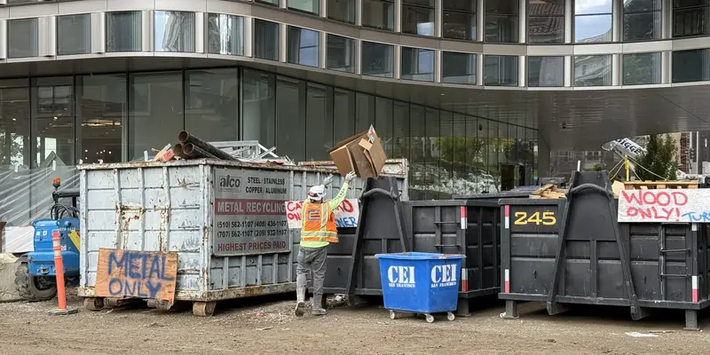
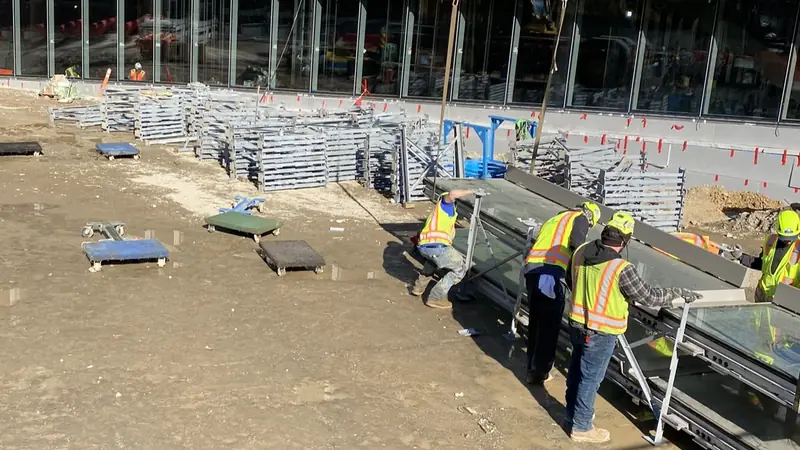
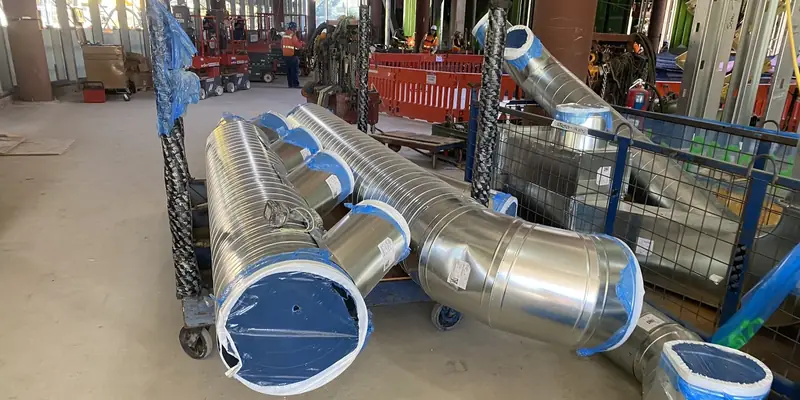
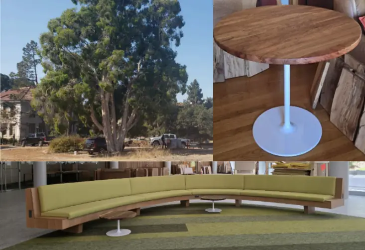
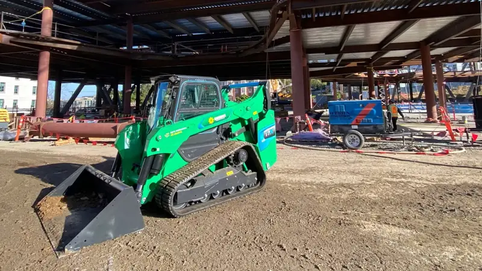

How We Built It
Gateway earned TRUE Platinum for Construction in August 2026, the highest level of TRUE certification. It's the first public project to earn TRUE Platinum for Construction.
About the certification
TRUE (Total Resource Use and Efficiency) certifies how well a project keeps materials out of landfill. Gateway's construction earned 63 points. The journey began with precertification in September 2023.
It was Turner Construction's first TRUE project. Turner led implementation and documentation, in partnership with UC Berkeley's Cal Zero Waste and project partners.
View Certificate (TRUE Platinum for Construction, PDF, opens in a new tab) TRUE Facility Case Study: UC Berkeley Gateway (PDF) (opens in a new tab)
Construction at a Glance
- TRUE Platinum 63 points, awarded August 2026
- 99.01% Construction waste diverted from landfill
- 66,751 tons Kept out of landfill, including soil and earthwork
- ~$1.8M Saved through source separation
Diversion, month by month
TRUE requires at least 90% of waste to be diverted from landfill, along with more than 80 other certification requirements. Every haul from the site was weighed and tracked.
Construction diversion rate
Share of each month's hauled material kept out of landfill
Show the monthly numbers
Source separation
Instead of one mixed dumpster, crews sorted major materials into dedicated containers on site. GroundForce coordinated hauling so each stream reached the right recycler.
Major materials diverted
Tons by material, metal and larger (excludes soil and earthwork)
Show all 13 material streams
Hauling cost comparison
Estimated cost for the project's documented materials
Show the numbers
Reusable shipping
Several trades swapped single-use wood crates and pallets for shipping systems that go back and get used again.

Curtainwall bunks
100+ tons of timber savedPermasteelisa North America (PNA) shipped and installed Gateway's glass curtainwall on reusable steel bunks instead of disposable wooden crates and pallets.

More reusable containers
- ACCO: reusable transport bunkers that protected ductwork during handling.
- Cupertino: reusable containers for electrical components.
Circular construction

From tree to table
Trees cut down for construction were given a second life. Nicholas Harvey at Bay Area Redwood crafted their wood into tables that are now used on campus. Thank you, Nicholas!
Vermicomposting
Food scraps from the construction site went to UC Berkeley's vermicomposting program, where worms turned them into nutrient-rich compost that supports campus research.
Cleaner equipment, smarter monitoring

All-electric loader
30% battery left after the longest recorded shift- The first U.S. construction-project pilot of the Bobcat T7X all-electric loader.
- Ran about 6 hours straight.
- Operator feedback went back to Bobcat and Sunbelt Rentals.
Water and energy on site
Water monitoring
Construction water sources were metered and reviewed regularly. Monitoring caught a restroom leak of about 30,000 gallons a month, and it was fixed within a week.
Renewable diesel
Used in jobsite equipment other than generators, in line with California off-road equipment rules.
Temporary power
Most welding ran on temporary grid power instead of diesel welding generators.
Live energy metering
About 15 systems were metered, including main gear, welding skids, restrooms, and site trailers. Trends were reviewed monthly.
Lower-carbon materials
Embodied-carbon modeling guided product choices for Gateway's biggest materials.
Embodied-carbon reductions
Compared with conventional material baselines (hatched = reduction)
Show the numbers
About each material
Curtainwall: 15% lower
The first U.S. facility-specific curtainwall Environmental Product Declaration (EPD), produced by Permasteelisa North America.
EcoSmart drywall: about 20% lower
5/8-inch Firecode X, compared with standard Type X drywall.
Lower-carbon concrete: 38% lower
Level 3 and above, with 30% slag replacement.
Steel and whole-building carbon
Electric arc furnace steel
Most standard steel sections, including wide flange, hollow tube, and plate, came from North American electric arc furnace plants that use recycled steel as feedstock.
EC3 pilot As-built estimate in progress
The schematic design estimate was 52.31 kg CO2e per square foot.